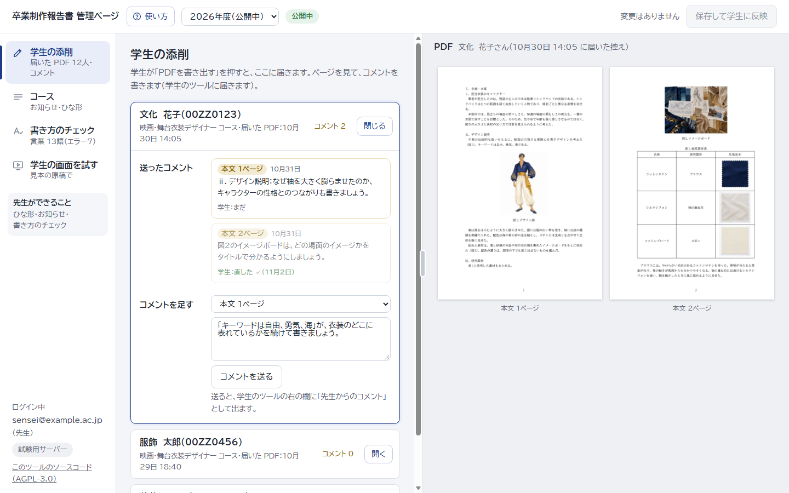
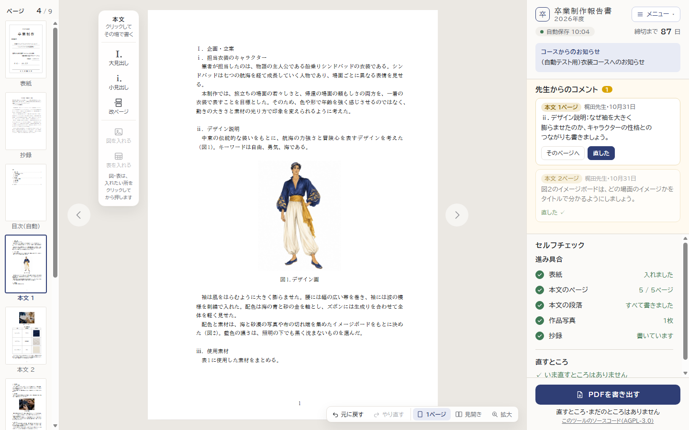
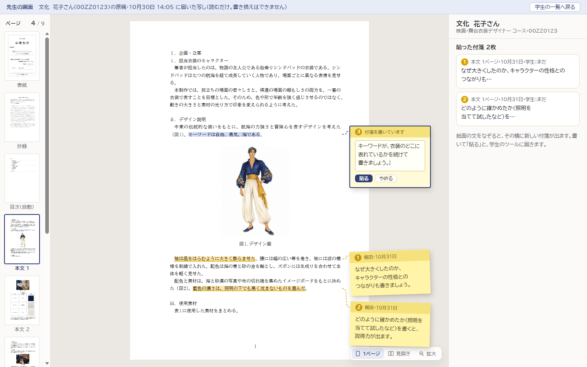
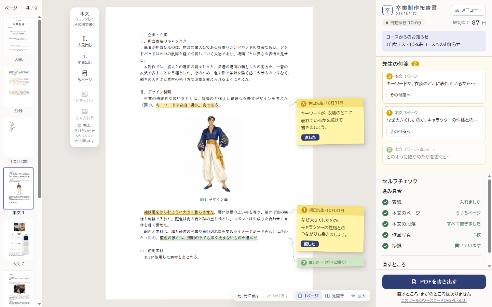
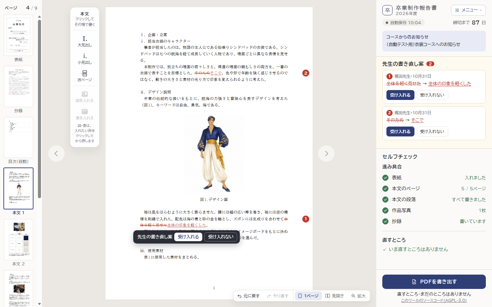

まだ作っていない仕組みを、画面に部品を足して見せた見本です。大きさの違う3つの形を並べました。学科での話し合いの材料にしてください（どれを作るかは、まだ決めなくて大丈夫です）。
先生は管理ページで、学生が書き出した PDF の控えを見ながら、「本文1ページ：〜」とコメントを書いて送ります。学生のツールの右の欄に「先生からのコメント」が出て、「そのページへ」で移り、直したら「直した」を押します。


学生が「先生に見てもらう」を押すと、原稿の写しが学科に届きます。先生は先生用の画面（読むだけ）で学生の紙面を開き、文をなぞると、紙面の右の端に新しい付箋が出ます。書いて「貼る」と、学生の紙面にも同じ付箋が貼られ、その文に下線の印と点線が付きます。学生が「直した」を押すと付箋は緑になり、小さくたたまれます（押すと開く）。右の欄には付箋の一覧。


先生が文を直接書き直した案を出し、学生の紙面に赤字で出ます。学生が「受け入れる」を押すと反映されます（Word の変更履歴に近い形）。先生の画面は②と同じで、付箋の代わりに書き直しを入れます。

どの形でも、先生の名前と日付が付き、学生が「直した」（③は「受け入れる」）を押したことは先生の画面にも出ます。②・③を作るときは、①の「先生からのコメント」の欄をそのまま広げて使えます。